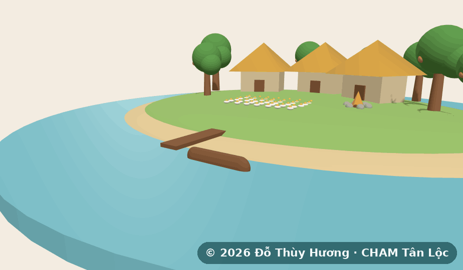
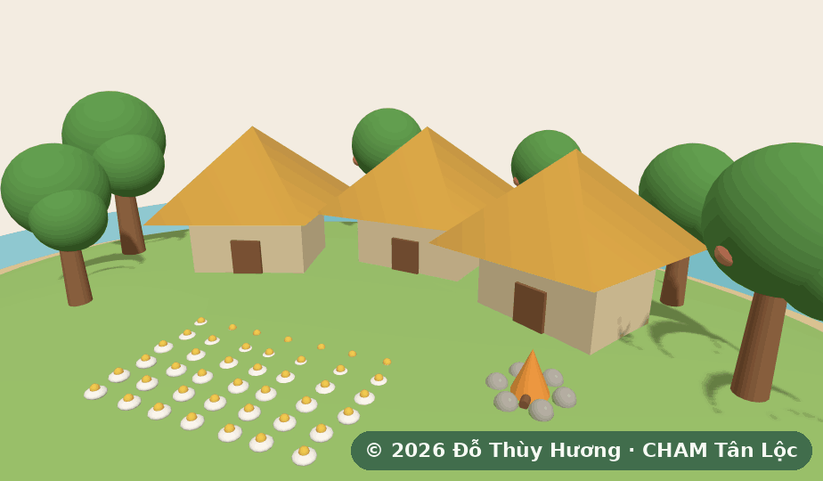
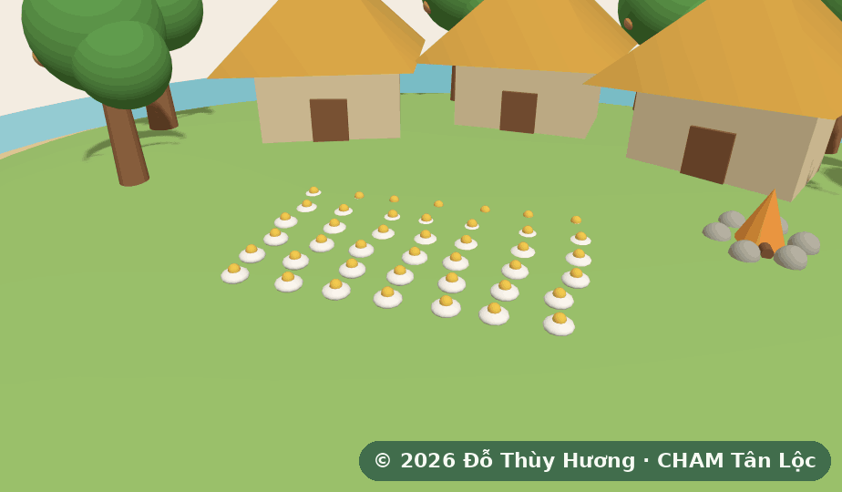
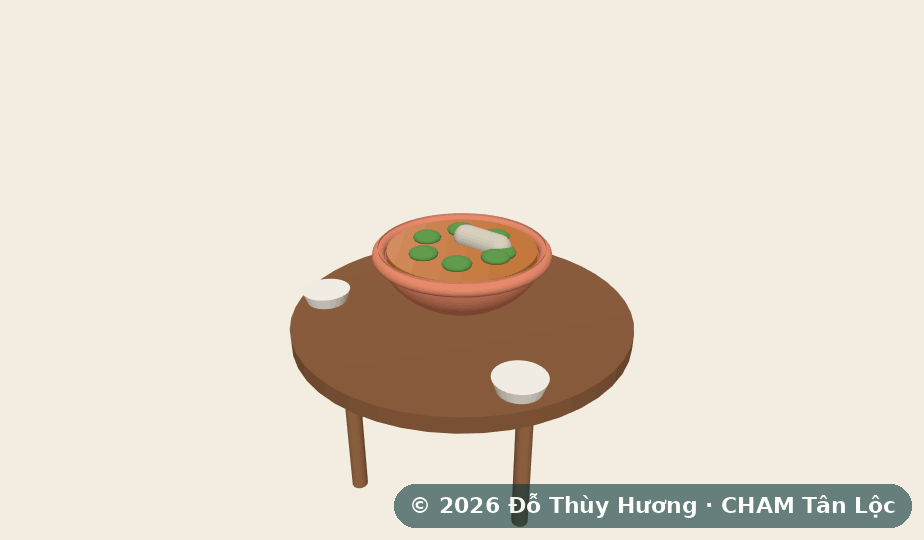
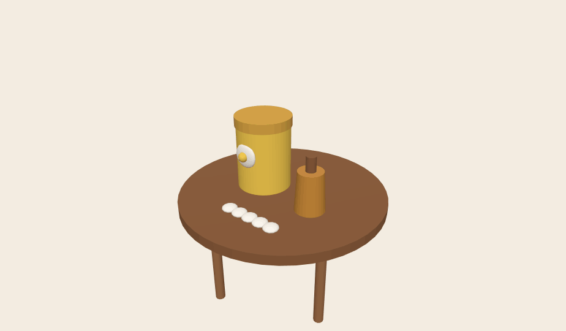
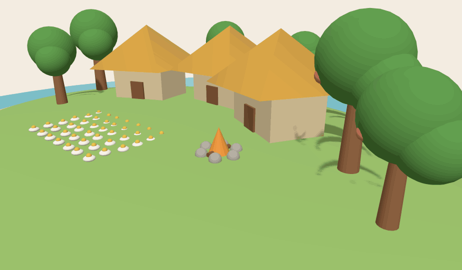
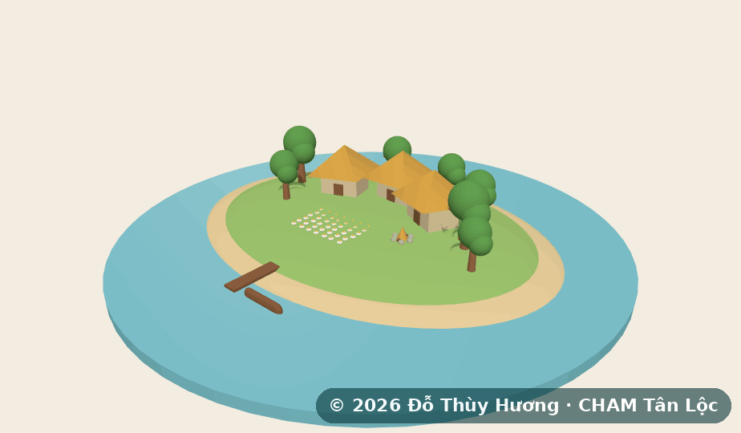
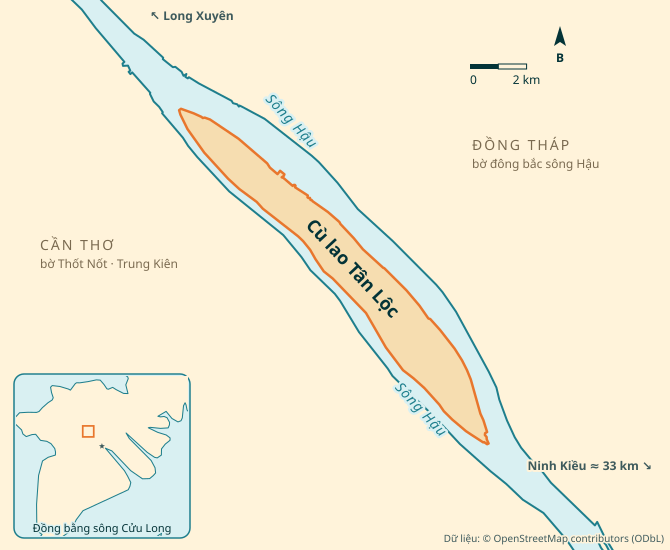

Bản mẫu dùng cho bài học. CHAM Homestay là dự án đang ở giai đoạn kế hoạch, chưa mở cửa: trang này không nhận đặt phòng, không gửi thông tin và không thu tiền. Mục ghi “cần xác nhận” là thông tin chưa có, phải lấy từ chủ homestay.
Một đêm trên cù lao Tân Lộc
Homestay sinh thái với sáu phòng nhà lá giữa vườn cây trái, trên cù lao giữa sông Hậu, nơi giáp ranh Cần Thơ, An Giang và Đồng Tháp.


Lưu trú6 phòng nhà lá, 2–4 khách/phòng, vệ sinh riêng500.000 đ / đêm
Vé trong ngàyLàm nông dân, bắt cá, đồng hoa cúc la mã, đạp xe quanh cù lao, trò chơi dân gian80.000 đ / người lớn
Ẩm thựcLẩu mắm cá tra Tân Lộc; lớp nấu ăn với nguyên liệu tự hái~120.000 đ / khách
Mang vềTrà cúc la mã, tinh dầu cúc la mã, mắm cá tra~150.000 đ / đơnKhi khách tham quan đã về
Đờn ca tài tử và lửa trại. Theo mùa có soi ếch, soi nhái và ngắm đom đóm.

Sáu phòng nhà lá
500.000 đ / đêmGiá đã được tác giả xác nhận: 500.000 đ/đêm (kế hoạch gốc 2017 ghi 50.000 đ).
Phòng trống · T7 14/11 (ví dụ)
Tên phòng và ảnh: cần xác nhậnMột ngày trên cù lao
Một vé cho tất cả hoạt động bên dưới. Không cần ở lại qua đêm.

Lẩu mắm cá tra Tân Lộc
Lẩu mắm cá tra cùng nhiều món đồng quê khác.
Khoảng 120.000 đ / kháchTự hái trong vườn, tự nấu
Bạn nấu bằng chính nguyên liệu mình tự thu hoạch.
Cù lao về đêm
Mang Tân Lộc về nhà
Mỗi đơn trung bình khoảng 150.000 đ.
Bản mẫu: giỏ chỉ đếm số món trên trang này, không bán thật.
Đặt chuyến đi
Hẹn gặp bạn trên cù lao
Chúng tôi sẽ xác nhận qua điện thoại hoặc Zalo.
Chỉ là bản mẫu: không có yêu cầu nào được gửi đi và sẽ không có ai gọi lại.
Đường đến

Khoảng 40 km: theo Quốc lộ 91 hướng Thốt Nốt (≈1 giờ), qua bến đò Thuận Hưng 5–10 phút (≈1.000 đ/người, 2.500 đ/xe máy).
Đến trung tâm Cần Thơ, rồi đi theo lộ trình bên trên.
Tổng thời gian: cần xác nhậnCù lao giữa sông Hậu, nơi giáp ranh Cần Thơ, An Giang và Đồng Tháp.
Mùa nước & an toàn
Lũ và sạt lở bờ sông là rủi ro thật trên cù lao. Đây là những điều chúng tôi báo khách trước khi đến.
cần xác nhận
cần xác nhận
cần xác nhận
cần xác nhận
Hai ngày một đêm ở Tân Lộc
Từ trung tâm Cần Thơ ra cù lao Tân Lộc, ở một đêm nhà lá tại CHAM.
Ngày 1
Ngày 2
CHAM™ và nội dung tình huống © 2017–2026 Đỗ Thùy Hương, dùng trên BizOn theo giấy phép không độc quyền. Dự án đang ở giai đoạn kế hoạch; số liệu là giả định, không phải kết quả hoạt động.